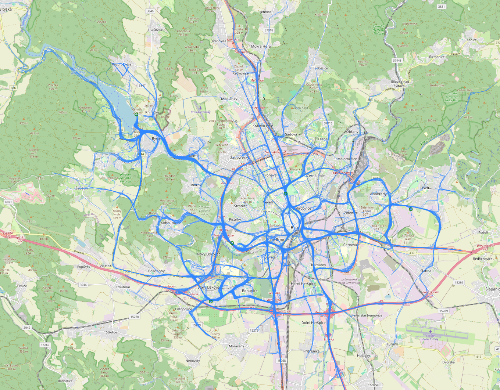
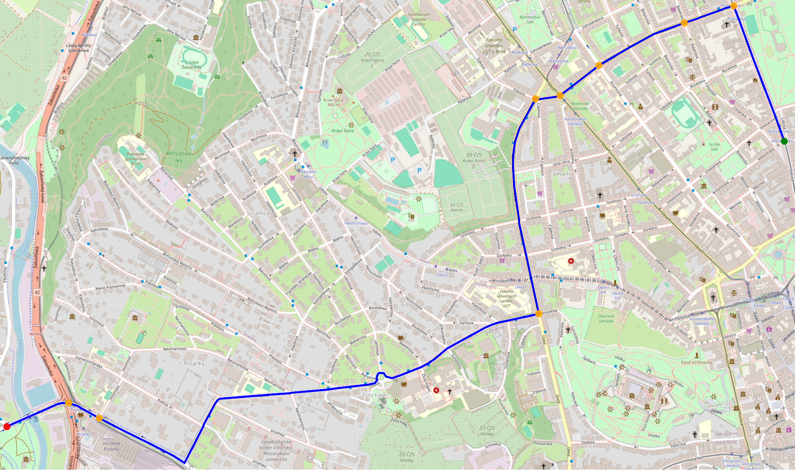
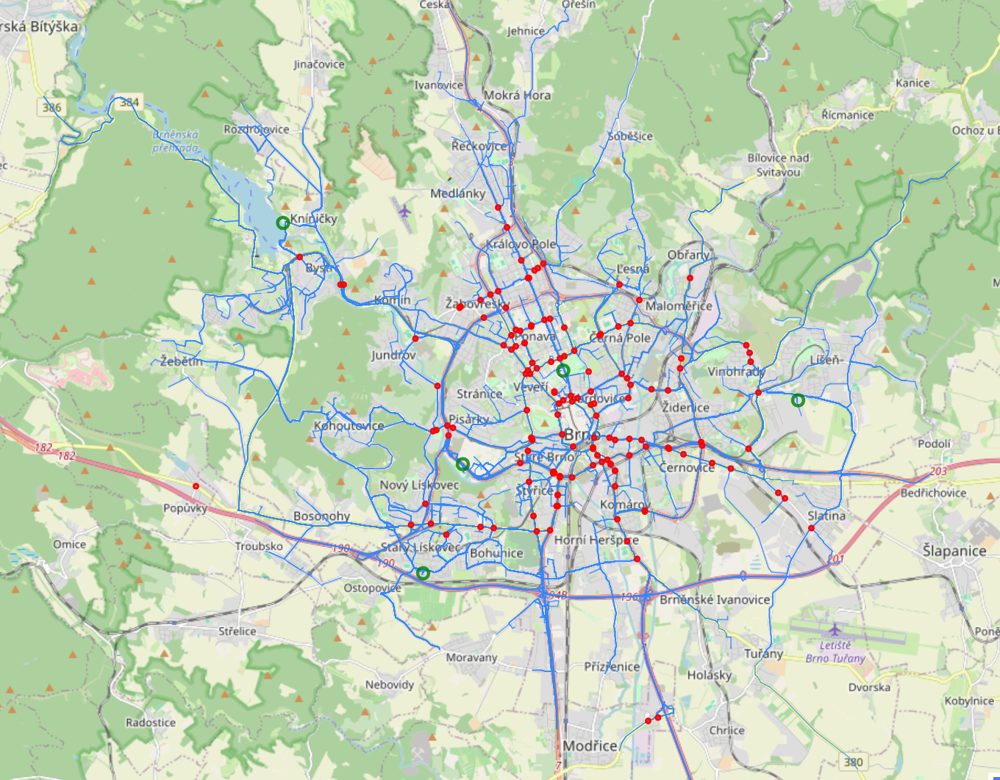

O projektu
Efektivní průjezd vozidel záchranných složek (IZS) je klíčový pro záchranu životů a minimalizaci škod na majetku. I přes znalost prioritního chování všemi účastníky silničního provozu se však stále jedná o výjimečnou situaci, která má negativní dopad na plynulost dopravy. Jedním z nejtypičtějších příkladů je prioritní průjezd křižovatkami.
Pro snížení dopadů prioritních průjezdů se v poslední době začíná využívat možnost komunikace mezi vozidlem IZS a kontrolou semaforu. Vozidlu IZS je tak umožněno zažádat o prioritní průjezd, v důsledku čehož je dynamicky upraven cyklus semaforu.



Klíčová výzva: Čas
V případě dynamických změn je nutné zajistit, aby žádost o prioritní průjezd dorazila s dostatečným předstihem, aby všichni účastníci silničního provozu měli dostatek času na bezpečnou reakci. Z tohoto důvodu je kritická možnost přesně a efektivně předvídat trasy výjezdů vozidel IZS.
Tato informace není na palubě často dostupná, jelikož řidiči navigují na základě osobních zkušeností. Jednou z možností, jak takovéto předpovědi vytvářet, je využití historických dat o trajektoriích výjezdů vozidel IZS.
Webové demo
Prohlédněte si naše interaktivní demo, které vizualizuje predikce tras v reálném městském prostředí.